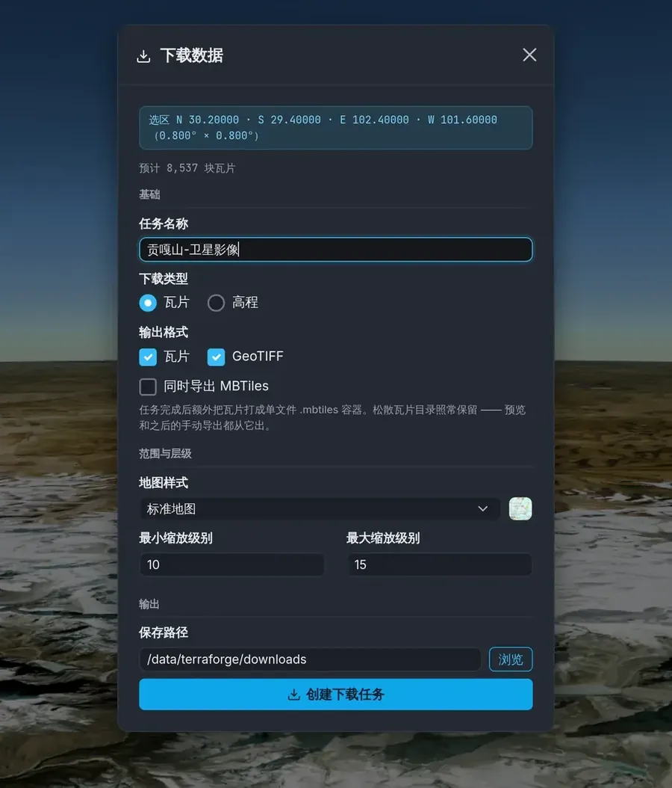

TILES / 地图瓦片
框选下载，拼成带地理配准的 GeoTIFF
从 Google Maps 取瓦片，边下边镜像到产物目录。要瓦片目录、要拼接好的 GeoTIFF、要单文件 MBTiles，勾选框自己组合。
- 样式
- 标准
m· 卫星s· 卫星+标注y· 道路h· 地形t - 产物
- 瓦片目录 · GeoTIFF（按 zoom 一层一张）· MBTiles（建任务时勾选或事后导出，不删原瓦片）
- 缓存
- 按「样式 + 坐标」键控，跨任务共享 —— 换个任务重下同一片区，已有的瓦片不会再走一次网络
